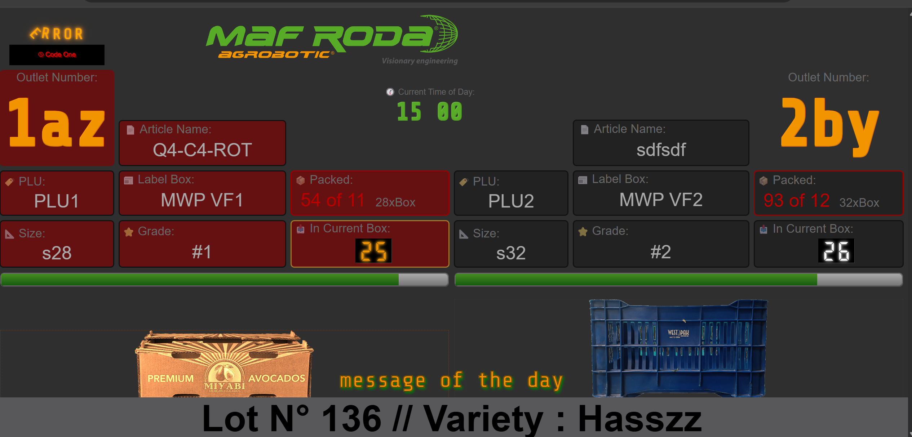
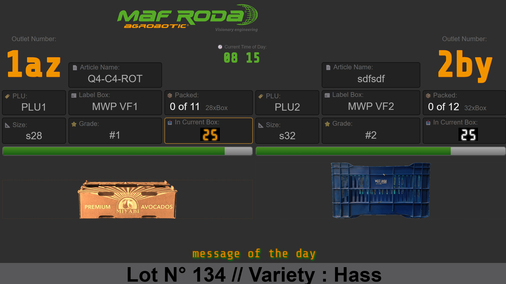
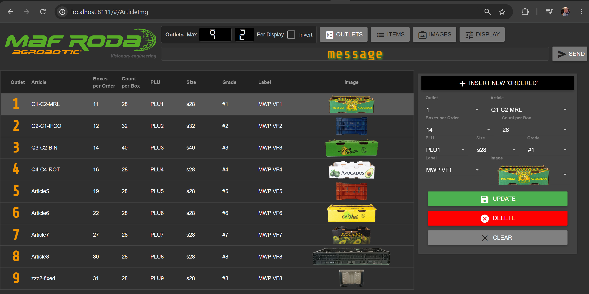
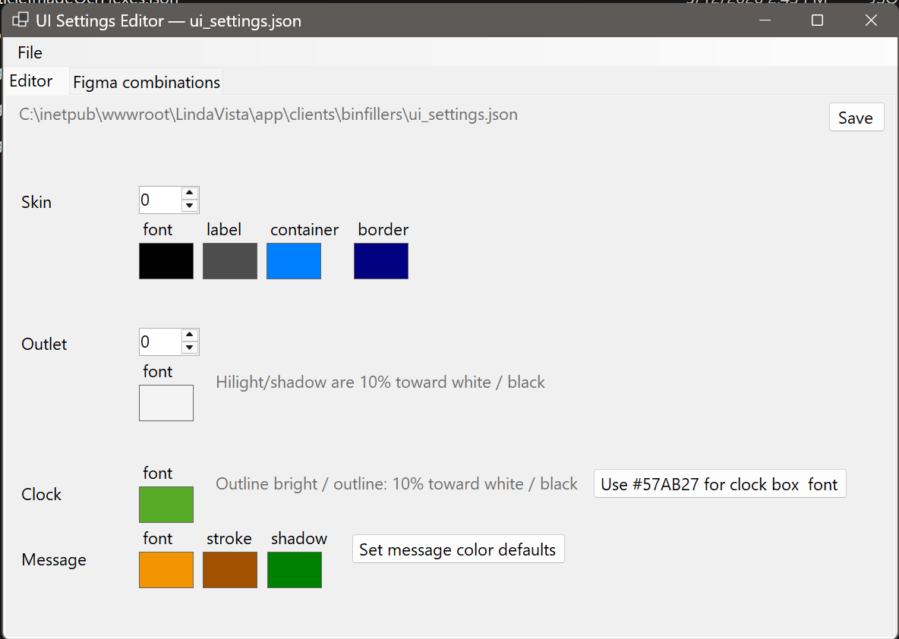
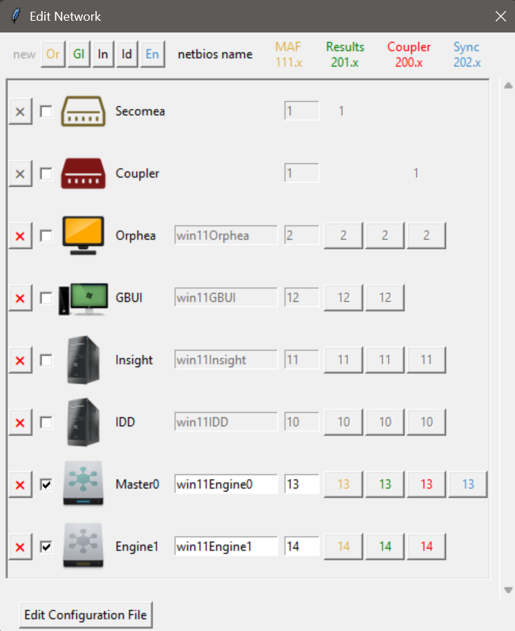
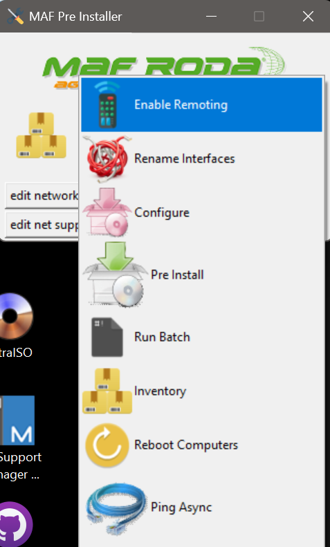

MAF RODA Agrobotic
Sr. Software Engineer — R&D Staff · Apr 2025 – Present · Remote / Americas
MAF RODA Agrobotic — global leader in post-harvest fruit and vegetable automation (sorting, grading, packaging, palletizing). Current role (3rd at MAF RODA): Americas traceability lead.
- Traceability — Americas: lead regional traceability systems; AI-assisted tooling and codebase modernization
- Python fleet installer (ORPHEA): YAML-driven operations framework — WMI/WinRM discovery, network config, remote provisioning of sorting clusters
- UiSettingsEditor: WinForms C# tool for production HMI skin / Figma palette settings (JSON appsettings)
- JsonWebApi: ASP.NET Core REST API backing traceability and packing web views
- OpenCV: SIMD + startup buffer pre-allocation on production sorters
Traceability — Americas
Current · Regional traceability lead
Lead traceability systems across the Americas. Apply AI on the engineering side — developer tooling, codebase modernization, and AI-assisted improvements to traceability projects and delivery workflows.
Screenshots from traceability tooling and web views deployed in the MAF sorting environment.




Python Fleet Installer
ORPHEA Operations Framework · Python · YAML · WinRM
Designed and built the MAF Silent Install / ORPHEA operations framework: a layered Python system that provisions fruit-sorting clusters from YAML configuration.
- Multi-tier architecture: high-level modules, operation objects, and support layer (WinRM, PSRP, OpenSSH, PsExec, WMIC, netsh)
- Remote handling of large installer payloads (~10 GB), decompression, and end-to-end software deployment on Orphea, Engine, and cluster hosts
- GUI (
run_gui.py) and batch runners for field engineers; script catalog and per-operation YAML configs - Documented in Software Architecture Document, Functional Specifications, and Framework.md (installer.doc)


UiSettingsEditor
C# · WinForms · JSON · Figma palettes
Desktop sample application for editing production UI settings used on sorting-line HMIs.
- Loads and saves JSON
appsettingsfor skin, outlet, and message styling - Figma-integrated color palette editor with live swatches (container, label, font, border, clock, message stroke/shadow)
- Validates combinations and syncs palette slots for article / outlet configurations
Stack: .NET WinForms, System.Text.Json, custom color-swatch controls.
JsonWebApi
ASP.NET Core · REST · JSON
Sample web API supporting traceability and packing workflows — serves JSON to Angular / web front ends in the MAF ecosystem.
- ASP.NET Core minimal hosting with controllers and OpenAPI
- JSON serialization with explicit property naming for legacy client compatibility
- CORS-enabled development mode; integrates with ArticlesImg XML and web view projects
Companion to web modules (WebPacking, WebViewBinFillers, LindaVista) in the Graphics tree.
OpenCV Performance
SIMD · Buffer pre-allocation · Production sorters
Optimized OpenCV image-processing paths on production fruit sorters using SIMD intrinsics and an allocation strategy that pre-allocates buffers at startup.
Result: reduced runtime memory footprint and buffer churn during high-throughput sorting operations on the line.